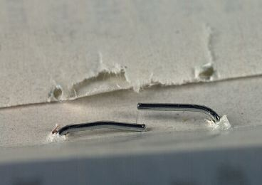
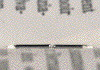
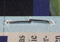
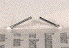
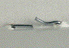
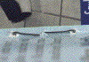
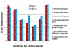

KLAMMERHEFTUNG - MANGELHAFTE KLAMMERHEFTUNG
|
Produktionsfehler bei der Herstellung von
Klammerheftungen- bzw. Drahtheftungen sind - neben
ungenügender Papierfestigkeit im Falz -
häufig auf mangelhaft ausgeformte
Klammereinstellungen zurückzuführen.
Dabei kommt es zu starken Qualitätsverlusten
in der Haltbarkeit der Heftung und in Verbindung
mit schlechter Papierfestigkeit häufig zum
widerstandslosen Auseinanderfallen der gefertigten
Produkte (Abb. 1).
|

|
Abb. 1: Mangelhaft ausgeführte
Klammerheftung.
|
|
|
|
Mögliche Ursachen:
|
|

|
|
Abb. 2: Klammerausführung gut.
|
|
|
|

|
|
Abb. 3: Klammerschenkel zu lang.
|
|
|
|
|
|
Abb. 4: Klammerschenkel zu kurz.
|
|
|
|
|
|
Abb. 5: Klammerrücken liegt nicht fest
an.
|
|
|
|

|
|
Abb. 6: Klammerschenkel nicht genügend
umgelegt.
|
|
|
|

|
|
Abb. 7: Ungenaue Einstellung an Heftkopf und
Umlegestation.
|
|
|
|

|
|
Abb. 8: Umleger mit zuviel Druck
eingestellt.
|
|
|
|

|
|
Abb. 9: Einfluss der geometrischen
Klammerausformung auf die Haltbarkeit des
Bindeergebnisses.
|
|
|
|
|
Das Grundprinzip der Klammerheftung besteht in dem Biegen
eines Drahtstückes über einem Biegeblock, dem
anschließenden Eintreiben in das Heftgut und dem
abschließenden Umlegen der Klammerschenkel im Falz des
Bogens.
Je nach Stärke, Rückenlänge und
Verwendungszweck werden die Broschuren mit 2 Klammern, 3
Klammern oder 4 Klammern geheftet. Hierzu werden je nach
Papier und Broschurendicke Heftdrähte mit einem
Durchmesser von 0,35 mm bis 1,05 mm angeboten, wobei im
Regelfall Drahtstärken von 0,5 mm bis 0,55 mm zum
Einsatz kommen. Die Länge des Klammerrückens liegt
im Normalfall bei 14 mm. Für spezielle Erfordernisse
werden Heftköpfe mit einem Klammerrücken von 5 mm,
8 mm und 16 mm von den Maschinenherstellern angeboten.
Um die verschiedenen Einflussmöglichkeiten
unterschiedlich ausgeformter Klammerschenkel auf die
Haltbarkeit der Heftung zu erfassen, konnten in
Zusammenarbeit mit einer Industriebuchbinderei
Pulltest-Versuche mit verschieden ausgeformten
Klammerstellungen durchgeführt werden. Die einzelnen
geometrischen Ausformungen der Klammern sind beispielhaft in
den Abbildungen 2 bis Abbildungen 8 wiedergegeben.
Die Ergebnisse der Pulltest-Versuche sind in der Abbildung
Nr. 9 dargestellt.
Wie die Untersuchungen zeigten, erreichen die
Haltbarkeitswerte bei einer guten Klammerausführung
(Abb. 2) und auch bei der Variation G (Abb. 8) ihre
Maximalwerte. Variation G gibt hier allerdings eine sehr
kritische Maschineneinstellung wieder, bei der es infolge
der stark gepressten Klammer sehr schnell zu
Papierschädigungen im Bereich der Heftklammer und damit
zu Qualitätsverlusten kommen kann.
Das schlechteste Ergebnis in der Haltbarkeit der
Bindequalität war bei nicht genügend umgelegten
Klammerschenkeln festzustellen (Abb. 6). Infolge der offenen
Klammerform kann die im Bundsteg fixierte Heftklammer nicht
genügend Widerstand gegenüber dem Papier im Falz
aufbauen, um eine optimale Haltbarkeit zu bewirken.
Wie aus den Untersuchungen ersichtlich wurde, können
ungenügende Maschineneinstellungen einen enormen
Qualitätsverlust von bis zu 15 N pro Heftklammer
bewirken. Dieser Sachverhalt macht deutlich, welch
entscheidende Bedeutung optimale Verarbeitungsparameter auf
die Qualität einer Bindung bzw. Heftung haben.
Besonders bei Rollenoffsetfertigungen in Verbindung mit
geringer bzw. kritischer Papierrestfestigkeit können
optimal aufeinander abgestimmte Verarbeitungsparameter einen
entscheidenden Qualitätsfaktor in der Haltbarkeit
bewirken.
Neben herstellungsbedingten Kriterien gibt es beim
wiederholten Öffnen und Schließen der Broschuren
Reibungsprozesse zwischen Heftklammer und Papier, die die
äußerste und innerste Lage stark belasten. Durch
diese Drehungen und Biegungen des Papiers werden der Strich
und die Papierfasern an diesen Stellen stark in Anspruch
genommen und abgenutzt( Abb. 4).
Bei der Fertigung von Broschuren und Katalogen mit einem
hohen Dauer- bzw. Langzeitgebrauch (z. B.: technische
Dokumentationen, Gebrauchsanweisungen) ist deshalb dringend
vor Überbelastungen infolge zu hoher Produktstärke
und ungeeigneter Materialkombinationen zu warnen.
|
Mögliche Abhilfen:
|
|
Exakte Angaben über eine verarbeitbare, maximale
Heftstärke sind in der Fachliteratur nicht bekannt.
Diesbezügliche Aussagen von Fachleuten variieren, wobei
heute Magazine mit Seitenzahlen von über
330 Seiten klammergeheftet werden.
Inwieweit diese Richtlinien überschritten werden
können, hängt entscheidend von der
sorgfältigen Verarbeitung, der Papierqualität und
dem Verwendungszweck bzw. Nutzungsgrad des späteren
Produkts ab, da das Papier speziell bei der Klammerheftung
starken mechanischen Beanspruchungen ausgesetzt ist.
Dies geschieht bereits beim Durchstoßen des Papiers
mittels Heftdraht während des Herstellungsprozesses.
Speziell beim Abschneiden des Heftdrahtes ist deshalb auf
einen sauberen Schnitt zu achten, da stumpfe oder schlecht
eingestellte Abschneidmesser einen Grat an der Schnittstelle
am Heftdraht bilden und beim Eintreiben des Drahtes zu
große Löcher im Papier verursachen, die wiederum
die Falzfestigkeit negativ beeinflussen.
Untersuchungen in der FOGRA haben gezeigt, dass das korrekte
Umlegen der Klammerschenkel als besonders wichtig zu sehen
ist, da Fehleinstellungen ein Ausreißen der inneren
Blätter stark begünstigen. Bei der Einstellung der
Heftköpfe und Umlegkästen ist vor allem darauf zu
achten, dass die Klammerschenkel glatt am Papier anliegen.
Die Schenkellänge der Drahtklammer muss der Dicke des
Heftgutes angepasst sein und sollte so eingestellt werden,
dass die Klammer innen fast geschlossen ist.
Allgemein ist die Festigkeit bzw. Haltbarkeit einer
Klammerheftung abhängig von:
-Dem Verhältnis der Festigkeit einer Klammer zur
Festigkeit des Werkstoffes.
-Der Anzahl der Klammern.
-Der Lage der Klammern zur Beanspruchungsrichtung.
-Den Abmessungen bzw. der geometrischen Ausformung der
Klammer.
-Der Drahtsorte und dem Drahtdurchmesser.
Außerdem werden an den Heftdraht folgende
Anforderungen gestellt, um einen störungsfreien
Maschinenlauf und eine qualitätsgerechte Heftung zu
gewährleisten:
-Zugfestigkeit für Runddraht: 0,6 - 0,9
kN/mm2.
-Zugfestigkeit für Flachdraht: 0,7 - 0,9
kN/mm2.
-Gleichmäßigkeit der Festigkeit, Härte und
Elastizität.
-Kein Brechen nach sechs Hin- und Herbiegungen.
-Genauigkeit des Drahtdurchmessers von + / - 0,02 mm.
-Abriebfeste Oberfläche zur Vermeidung von
Metallstaub.
|
Beispiel(e):
|
|
Bei einer Zeitschriftenproduktion mit hoher Auflage wurde
das extrem leichte Herauslösen der innersten Lagen
beanstandet. Für die Untersuchungen in der FOGRA wurden
fertig geheftete Exemplare, unbedrucktes Auflagenpapier und
nicht geheftete Falzbogen zur Verfügung gestellt.
Die Prüfungen der Papierfestigkeit im Falz ergaben
Restfestigkeitswerte, die in einem Grenzbereich lagen bei
dem sowohl papierbedingte als auch verarbeitungstechnische
Probleme ein Brechen im Falz hervorrufen können. Die
visuelle Begutachtung der Klammerheftung zeigte, dass die
geometrische Ausformung der Klammerschenkel
äußerst mangelhaft ausgeführt worden
war.
Gerade in Verbindung mit kritischen Papierqualitäten
und/oder schlecht gefalzten Bogen kann eine mangelhafte
Klammerausführung die Haltbarkeit drastisch
verschlechtern, während umgekehrt eine korrekt
ausgeführte Klammereinstellung einen Zugewinn an
Heftqualität bedeutet und damit in Grenzfällen
mögliche Reklamationen verhindern kann.
|
Allgemeine Hinweise:
|
|
Für den Reklamationsfall:
Maschineneinstellungen überprüfen.
Reklamierte Muster sicherstellen.
Unbedrucktes Papier sicherstellen für
Restfestigkeitsprüfungen (20 Bogen DIN A4).
Ergänzende Literatur:
FALTER, K.-A.; SCHMITT, U.:
Einfluss der Hitzeeinwirkung auf die
Festigkeitseigenschaften und die Dimensionsveränderung
des Druckpapiers.
München: FOGRA, 1989 (4.035). - Forschungsbericht
FALTER, K.-A.; SCHMITT, U.:
Entwicklung und Erprobung einer Prüfstrecke zur
Ermittlung der Falzfestigkeit von Rollenoffsetpapieren.
Wiesbaden/München: Bundesverband Druck und Medien
e.V./FOGRA, 1990 (4.048). - Forschungsbericht
KIRMEIER, M.:
Festsetzung neuer Grenzwerte für die Restfestigkeit von
leichtgewichtigen Papieren.
In: FOGRA-Aktuell (1996), Nr. 22, S. 3
FALTER, K.-A.; KIRMEIER, M.:
Erfassung der Wirkungsweise von Rückbefeuchtungsanlagen
in Rollenoffsetmaschinen.
Wiesbaden: Bundesverband Druck und Medien e. V., 1995, -
Informationen
STADLER, P.; WIMMER, M.: Richtlinien zur
Qualitätsbeurteilung der Haltbarkeit von
Fadensiegelungen, Klammer- und Fadenheftungen.
Wiesbaden/München: Bundesverband Druck und Medien
e.V./FOGRA, 2000 (71.001). - Forschungsbericht
|
|
|
|
|
|
|
Kontakt:
wimmerm@fogra.org
|
Kla-mw-200111
|